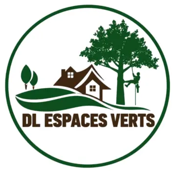
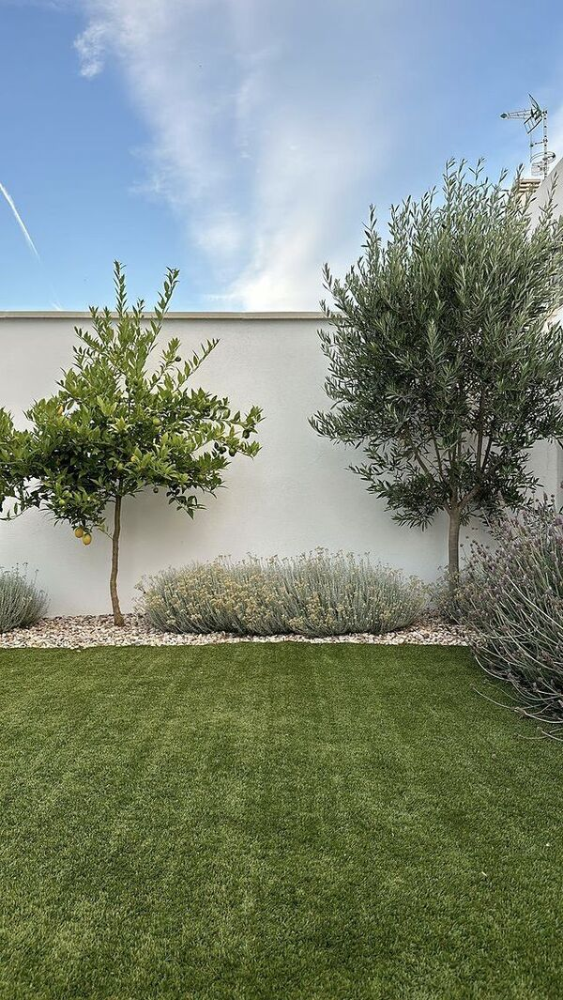
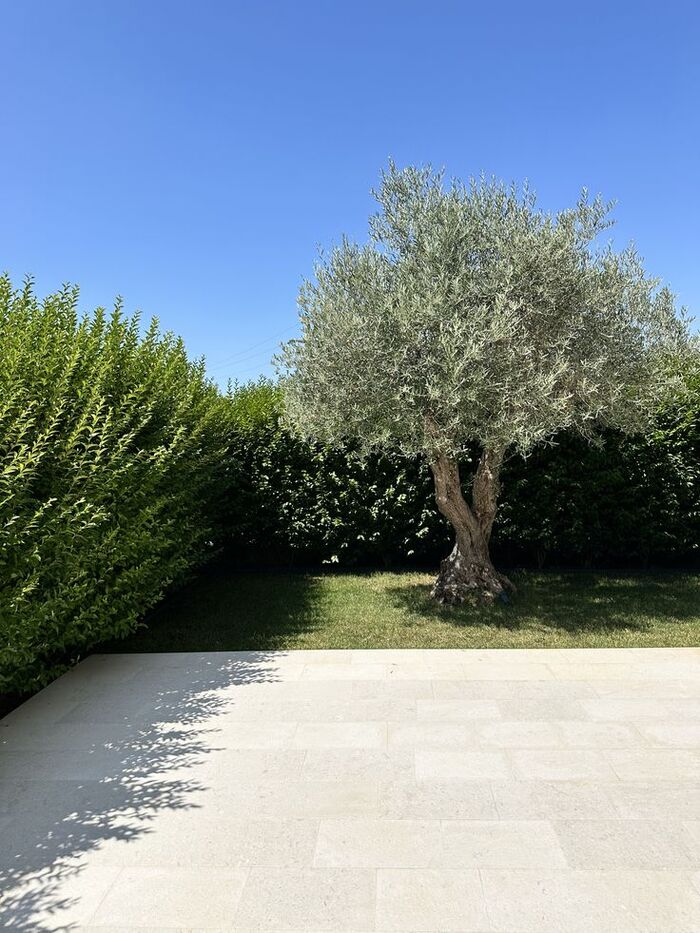
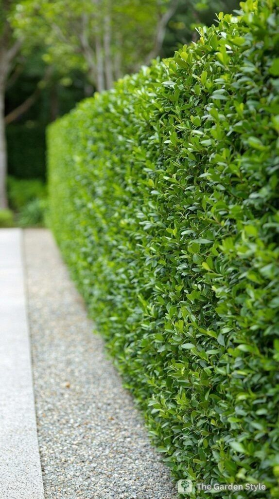

Chapitre II
Notre
savoir-faire
Quatre métiers, un seul objectif : le jardin dont vous rêvez. Laissez la caméra faire le travelling →

DL Espaces Verts présente
tourné dans le Gers, jusqu'aux portes de Bordeaux
Conseil : montez le son & plein écran pour l'expérience complète
Paysagiste · Grimpeur-élagueur · Gers & Sud-Ouest
Chaque jardin mérite son plus beau plan.
Quelque part dans le Gers…
…entre vallons, vignes et tournesols,
jusqu'aux portes de Bordeaux,
une équipe met vos espaces verts en scène.
Chapitre I — Le manifeste
Chez DL Espaces Verts, on ne se contente pas d'entretenir des jardins : on les met en scène. Une haie taillée au cordeau, un arbre allégé avec respect, une pelouse qui respire. Chaque détail compte, comme dans un plan de cinéma. Basés dans le Gers, nous intervenons jusqu'en Gironde, pour les particuliers comme pour les professionnels.
Visite sur place et chiffrage clair, sans engagement.
Chantier propre, déchets verts évacués, finitions nettes.
Interventions en hauteur sur cordes, en sécurité.
Une équipe locale qui se déplace dans tout le Sud-Ouest.
Chapitre II
Quatre métiers, un seul objectif : le jardin dont vous rêvez. Laissez la caméra faire le travelling →
Plan 01 · Création
Du croquis à la dernière plante : nous dessinons et réalisons des jardins qui vous ressemblent, pensés pour le climat du Sud-Ouest.

RECPLAN 01Plan 02 · En hauteur
Notre grimpeur-élagueur intervient sur cordes, au plus près de l'arbre, pour le tailler sans le blesser ou l'abattre en toute sécurité, même dans les espaces étroits.

RECPLAN 02Plan 03 · Toute l'année
Ponctuel ou sous contrat annuel, on garde votre jardin impeccable, saison après saison. Vous profitez, on s'occupe du reste.

RECPLAN 03Plan 04 · Remise à neuf
Terrain envahi, ronces, friche ? Nous rendons vos parcelles nettes et praticables, et nous repartons avec les déchets verts.
Chapitre III — Une année au jardin
Le réveil
Chapitre IV — Prise de vue interactive
Cette haie a été un peu oubliée… Prenez le sécateur : passez la souris (ou le doigt) dessus en maintenant le clic pour la remettre au cordeau.
Coupez ! C'est dans la boîte.
Joli travail… mais pour vos vraies haies, laissez faire les pros.
Demander un devisChapitre V — Sur le tournage
Chapitre VI — Lieux de tournage
Basés dans le Gers, nous sillonnons le Sud-Ouest : de l'Armagnac à la vallée de la Garonne, jusqu'à la métropole bordelaise.
Votre commune n'apparaît pas ? Contactez-nous, on étudie chaque demande.
Chapitre VII — Votre scénario
Trois prises, une minute. Décrivez votre jardin, on vous rappelle avec un devis gratuit.
Fin
… ou plutôt, le début de votre jardin.
Demander mon devis gratuit